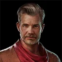
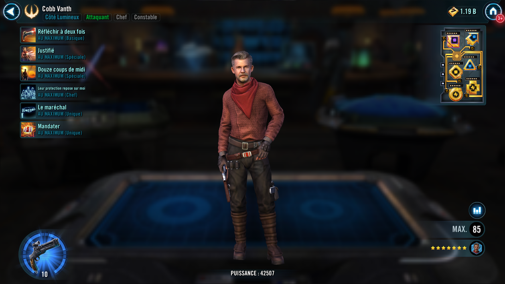
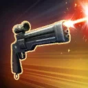
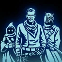

Cobb Vanth
The Marshal of Mos Pelgo brings justice to those who harm all he has sworn to protect

The Marshal of Mos Pelgo brings justice to those who harm all he has sworn to protect


Deal Physical damage to target enemy and gain Tenacity Up for 1 turn.
If the target enemy was Dark Side, they are inflicted with Offense Down and Constable allies gain Offense Up for 1 turn.
If the target enemy was Light Side, they are inflicted with Defense Down and Constable allies gain Defense Penetration Up for 1 turn.
If the target enemy was Outlaw, dispel all buffs on them and inflict Buff Immunity for 1 turn, which can't be resisted, and dispel all debuffs on all Constable allies.
Deal Physical damage to all enemies and grant a bonus turn to another random Constable ally. Allies that have been damaged since their last turn gain Retribution for 2 turns, otherwise they gain Alert for 2 turns. Enemies that damaged Constable allies since Cobb's last turn are Ability Blocked for 1 turn, otherwise they are Vulnerable for 1 turn.
Deal Physical damage to target enemy increased by 50% per other active Constable ally. If this attack is the first time this ability has been used against the enemy they lose 50 Speed and are Distracted until the end of encounter, which can't be dispelled or resisted, and can't deal damage to another Constable ally until damaging Cobb.
If all allies are Constable, Jawa, or Tusken, they gain buffs until the end of encounter that can't be dispelled or prevented for each unique enemy attacked by this ability:
- 1+: Defense Up
- 2+: Speed Up
- 3+: Execution
This ability can't be evaded.
Omicron Boost : While in Territory Battles: Dispel all debuffs on all allies and they gain 10% Max Health (stacking) for the rest of the battle. Constable allies recover 25% Health and Protection and gain 25% Turn Meter. If the target enemy is Outlaw, call all Constable allies to assist. Constable allies take reduced damage from Percent Health damage effects until the end of encounter. Reduce this ability's cooldown by 6. If this ability defeats an enemy, revive all allies.
Execution: Whenever this character uses a Special ability, instantly defeat the target enemy then remove this buff from all allies

At the start of battle, Constable allies gain 25% Defense, Max Health, and Offense, and 25 Speed (tripled if they are Supports). At the start of the encounter, enemy Hutt Cartel, Pirates, Scoundrels, and Smugglers gain the Outlaw tag. Whenever Outlaw enemies gain bonus Turn Meter they can't gain it again for 1 turn.
Constable Support allies at the start of battle:
- Reset the cooldowns of their Special abilities whenever they use a Basic ability on their turn
- Whenever they use a Special ability, all allies gain 10% Turn Meter and Constable allies gain 5% Max Health (stacking) until the end of encounter
- Whenever they debuff an enemy, at the end of the turn, they also Expose the enemy, which can’t be resisted, until the end of encounter
- Whenever they deal damage, deal an additional instance of True damage
- Chance effects are increased to 100% at their max rank
- Can't be defeated while Cobb is active and gain Stealth for 2 turns whenever they reach 1% Health
Cobb, Jawas, and Tuskens start the encounter with bonus Protection (75%, stacking) for the rest of the encounter per Constable ally. Whenever an ally Jawa or Tusken applies at least 5 buffs to allies (1 if it is Taunt) or inflicts at least 5 debuffs on enemies (1 debuff if that enemy is Outlaw) that ally gains the Granted ability, Deputize.
Omicron Boost : While in Grand Arenas: If there are at least 3 Constable allies, Jawas start the battle with Deputize. Whenever a Thermal Detonator deals damage to an enemy, Constable allies also recover 10% Protection. Whenever any enemy gains bonus Turn Meter they can't gain it again for 1 turn. Whenever Cobb uses a Special ability, Jawa Tanks Taunt and gain 100% Defense for 2 turns. Stealthed enemies have -100% Accuracy. If there is a Jawa ally at the start of battle, allies are immune to Thermal Detonators.
(See the ability Deputize for a description of Deputize.)
Cobb has +10 Speed per active Constable ally. At the start of battle, if there is a Jawa ally, Cobb gains Bounty Hunter's Resolve until the end of encounter. If there is a Tusken ally, Cobb is immune to Damage Over Time.
Whenever a Constable ally is damaged by an enemy, that enemy is inflicted with Burning for 1 turn, which can't be resisted, and can't recover Health or Protection while Burning. Jawas and Tuskens gain 25% Turn Meter whenever another Constable ally uses a Special ability.
Dark Side enemies have -100% Critical Damage. Dark Side enemies lose 50 Speed for 1 turn whenever they are critically hit by a Constable ally. Light Side enemies have -100% Tenacity. Light Side enemies dispel their buffs whenever they critically hit a Constable ally.
Constable allies can ignore Taunt effects to target Outlaw enemies and can't have their Turn Meter reduced by Light Side enemies or cooldowns increased by Dark Side enemies on their respective enemy turns.
All Constable allies recover Health and Protection equal to the damage enemies have taken during Cobb's turn. Whenever an enemy starts their turn, reduce the cooldown of High Noons by 1 (2 if the enemy is Outlaw). Distracted Outlaw enemies can't assist.
Omicron Boost : While in Territory Wars and if there are no Galactic Legend allies: If there are at least 3 Constable allies and Cobb is the ally in the Leader slot, Tuskens start the battle with Deputize. Tuskens no longer consume Momentum from Deputize whenever they use an ability with more than 10 stacks. If there is a Tusken ally, Stunned enemies can't gain bonus Turn Meter. All Distracted enemies can't assist. At the start of their turn, Constable allies can ignore Taunt effects if they have at least 10 stacks of Momentum.
Whenever Tusken allies use Deputize, revive Cobb and Tusken allies with 100% Health. Tusken allies are immune to Damage Over Time. Whenever Tusken allies use a Special ability, Cobb gains Protection Up (100%) for 1 turn.
Deputize (Jawa): Recover 100% Health and Protection. Gain 25% Defense, Max Health, and Offense, 25 Speed, and the Constable tag for the rest of battle. Inflict a Thermal Detonator on all enemies for 2 turns.
At the start of a Constable ally's turn, if there is an active Jawa ally, inflict a Thermal Detonator on all enemies for 2 turns. Whenever a Thermal Detonator deals damage to an enemy, Constable allies recover 10% Health and gain 100% Offense for 1 turn. Enemies with a Thermal Detonator deal 25% less damage.
Limit one use per battle.
Deputize (Tusken): Recover 100% Health and Protection. Gain 25% Defense, Max Health, and Offense and 25 Speed, and the Constable tag for the rest of battle. The strongest enemy without Ambushed is Ambushed for the rest of the encounter, which can't be dispelled, evaded, or resisted.
All Constable allies gain 10 Momentum for 3 turns. Whenever a Constable ally is targeted by an enemy and they have at least 10 stacks of Momentum, consume all stacks of Momentum and Stun all attacking enemies for 1 turn, which can't be resisted.
Whenever Constable allies use an ability while they have at least 10 stacks of Momentum, deal bonus True damage equal to 25% of the target enemy's Max Health, then consume all stacks of Momentum. Constable allies gain 5 Momentum for 3 turns at the end of their turn if there is an active Tusken ally.
Limit one use per battle.